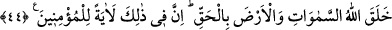

44. Allah, gökleri ve yeri hak olarak (yerli yerince) yarattı. Şüphesiz bunda, îman
edenler için (Allah’ın varlık ve kudretine) bir nişâne bulunmaktadır.
“Allah, gökleri ve yeri hak olarak (yerli yerince) yarattı.”
“Hak olarak” ifâdesi; “yarattı” fiilinin fâilinden haldir. Yani, Allah Teâlâ yerleri ve
gökleri, hikmet ve maslahatları gözeterek hakkıyla yaratmıştır, demektir. Ya da
mef’ûlden haldir; buna göre şöyle bir anlam kazanır: Allah Teâlâ yerleri ve gökleri dînî
ve dünyevi menfaatları peşinden getiren, sapma ve inhiraf söz konusu olmaksızın hakla
iç içe girmiş olarak yarattı. Bunlar, onların yaşamla ilgili her şeyini kapsamakla
beraber, Allah’ın vahdâniyyetine, kudretinin büyüklüğüne ve diğer sıfatlarına delâlet
eden şahidlerdir. Nitekim âyetin devamı da buna işâret eder:
“Şüphesiz bunda,” yâni yerin ve göklerin yaratılışında “îman edenler için (Allah’ın
varlık ve kudretine) bir nişâne bulunmaktadır.” Yer ve göklerin yaratılışında, bütün
insanlara yönelik bir hidâyet ve irşad olmakla birlikte, âyette sadece “müminler”in
zikredilmesinin sebebi, bundan sadece onların istifâde etmesidir. Ancak bu Allah’ın
nuruyla bakan müminler içindir. Çünkü nur sadece nur ile görülür. Allah bir kimse için
nur yaratmamışsa, artık onun nuru yoktur.
Cihan, bizim sevgilimizin güzelliğinin aynasıdır
Bütün zerrelerde onun yüzünü/cemâlini seyret
et-Te’vîlâtü’n-Necmiyye’de der ki: “Allah, gökleri ve yeri hak olarak (yerli yerince)
yarattı.” Yani Allah, yerleri ve gökleri sıfatlarının mazharı (göründüğü yer) olması için
bir ayna olarak yarattı.
“Şüphesiz bunda, (Allah’ın varlık ve kudretine) bir nişâne bulunmaktadır.)” Yani,
şüphesiz göklerde ve yerde emânet olarak konulmuş hak âyet bulunmaktadır.
Akıllı kimseye gereken Allah’ın rahmetinin eserlerine bakmak, yaratmasındaki acâib
ve hârikulâde halleri, kudretinin eşsizliğini düşünmek ve tefekkür etmektir; ta ki bu
şekilde mârifet denizinden inciler çıkarabilsin...
Rivayete göre; Dâvud (a.s.) mihrabına girince, orada küçük bir kurt gördü. Onun
yaratılışını düşünerek dedi ki: “Allah, bunun yaratılmasına ne önem verir.” Allah, kurdu
konuşturdu ve kurt şöyle dedi: “Ey Dâvud! Sen, kendine şaşmıyorsun da bana mı
şaşıyorsun? Allah’a yemin olsun ki, O’nun sana verdiği nimetlere karşılık ben senden
daha fazla O’nu zikrediyor ve O’na şükrediyorum.
Hayatü’l-hayavan’da nakledildiğine göre, bir kimse bir domuzlan böceği gördü ve
kendi kendine dedi ki: “Allah bunu yaratmakla neyi kasdeder; onun şekli mi güzel, yahut
kokusu mu?” Bunun üzerine Allah bu kimseyi derin yaralı bir çıban ile mübtelâ kıldı. En
mâhir doktorlar bile tedâvîden acîz kaldılar; o da artık tedâvî olmayı terketti.
Bir gün sokakta halka seslenen, bir kâhin tabîbin sesini işitti. Yanındakilere “Şu kâhini